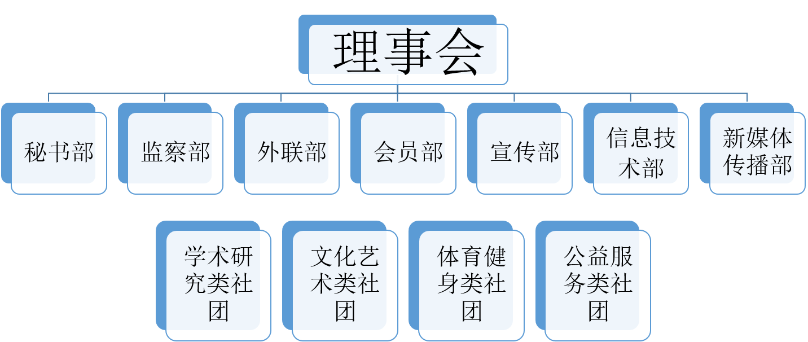

广州大学华软软件学院社团联合会
广州大学华软软件学院社团联合会成立于2002年，是对学生社团管理与监督的机构， 是在学院团委领导下，团结、组织和引导全院学生社团为提升大学生综合素质、促 进大学生成长、成才提供全面服务，丰富和活跃校园文化；在学生社团中倡导自我 服务、自我学习、自我教育、自我管理、支持学生社团建设和发展，搭建学生社团 的交流、学习和服务平台，促进学生社团的科学化、专业化、社会化发展的学生组 织。社团联合会是构建“一体两翼”学校团建大格局的重要组成部分，是凝聚青年、 丰富校园文化、培养和传承大学精神的重要载体。
社联文化
社团是个充满激情和活力的大家庭
团队精神是重要的
联系是沟通的第一步
合作是成功的重要因素之一
会端正态度、理智处事
组织架构
部门职能
【理事会】
社联理事会是社联的最高权力机构，下设7个职能部门，分别是秘书部、监察部、外联部、宣传部、信息技术 部、新媒体传播部、会员部。
职能:
一、负责社团联合会的全面工作，指导各社团开展工作，协调各协会之间的关系；
二、筹备和召开学生社团代表大会；
三、社团联合会的各项制度的实施工作；
四、依据社团评优细则，评选优秀社团、优秀社团负责人。
【秘书部】
秘书部是社联内部沟通的枢纽，主要负责文件的发放与归档，各种会议的准备工作、通知、会议的记录以及考 勤工作。同时，负责财务工作的记录与核对，物资管理等等。
职能：
一、负责指导社团完善相关的制度，如组织制度、记录制度、财务制度、责任制度及档案管理制度；
二、负责传达内部工作通知，协调社联各部门工作；
三、负责社联财务的管理，审查社联各部门的经费申请，规范各社团的经费支出，定期召开社团财务会议；
四、负责社团的账簿核对和学生社团星级评比；
五、负责社联内部常规工作事项（会议记录、会议考勤、社联办公室管理、物品管理等）。
【监察部】
监察部是社联的一个核心部门，也是连接社团与社联的纽带，主要负责社团活动开展工作和社团的合并、注销 以及考评，对社团的日常工作进行监督。
职能：
一、负责深入了解社团，监督学生社团的各项工作，包括活动审批、开展及活动总结；
二、负责社联内部与各社团之间的沟通与合作；
三、负责在学期末以公平、公正、客观、求实的态度根据各社团的活动成果与社团发展建设程度进行评优。
【外联部】
外联部作为一个双向的部门，对内需要处理好与社联各部门和各社团之间的关系，加强院际交流的纽带；对外 外联部需要负责社团联合会的对外联络工作，是连接华软与从化各大高校交流与合作分享的桥梁，外联部以沟通、 交流、联系为主要契机开展活动并为社团联合会各项活动提供有力的资金支持。
职能：
一、筹集社团联合会各项活动的资金；
二、负责与外校联系，把外校的成功经验和优秀的活动引进，加强与兄弟院校的交流与合作；
三、负责社团联合会各项活动的节目演出、协助各文体性质社团开展活动；
四、负责大型活动的对外联系工作（包括联系嘉宾，安排礼仪等）；
五、协调好各方关系，为社联发展提供良好的人文环境。
【宣传部】
宣传部是社团联合会对外展示的形象代言人。作为门面的负责人，我们具有丰富的创造力与想象力，同时承担 着社联各大型活动的宣传工作，并且负责协助各社团宣传部发展的责任。细致纷繁，灵活多样，绚丽多彩。宣传部 拥有独特的舞台，展现出社团联合会成长的足迹 。宣传部的成员虽然来自不一样的专业，但在这里形成了一个具有 活力四射的热情与认真负责的态度的集体，是社联创意空间的核心。
职能：
一、全面负责社团联合会的宣传工作，并协同各部门完成社团联合会各项活动对内布置、对外宣传的各项工作；
二、负责对校园社团宣传活动的监管、指导，规划和管理学生社团宣传阵地；
三、协助、督促各社团宣传活动工作与审批、规范各社团活动的宣传产物。
【信息技术部】
信息技术部作为社团联合会的技术支持，负责视频制作、网站建立与完善、后台维护工作，以及为社联各种大 型活动制作PPT和提供的技术支持等等。
职能：
一、负责社团联合会相关宣传视频拍摄与后期制作，各协会视频的审核；
二、负责社团联合会微信公众号的后台维护工作及社团联合会网站的建立与完善；
三、为社团联合会各种大型活动的设备调试提供技术支持；
四、为社团联合会各种大型活动制作PPT；
五、负责社团联合会网络专用账号的管理工作。
【新媒体传播部】
新媒体传播部，是社团联合会文本编辑与传播的部门。我们以社联的视角观测着整个学院，时刻关注社团动态 ，不放过每一个社团丰富多采的活动，不错过社团活动中每一个精彩纷呈的环节。我们携带社联公众号、社联和社 团的各种新闻稿、活动照片，结合线上线下的各种宣传平台，为学校社团、社联做好宣传工作，给全院的师生带来 最新的校园资讯，充分利用新媒体的力量提高社团、社联的知名度和影响力。
职能：
一、主要负责撰写社联活动的各类稿件，包括新闻稿、主持人稿；
二、主要负责社联社团活动的拍摄工作；
三、负责社联微信公众号的日常管理工作；
四、负责各社团资料的收集及归档，社团新闻稿的审核与修改。
【会员部】
会员部，对于各社团协会而言是社团联和会的形象大使。主要负责管理协会会员，以及积极地与会员进行沟通 ，处理相关问题；同时，也负责审批协会的成立与解散等。协助与服务校园各大协会，为社联和各协会共同迈进美 好的明天是我们会员部的职责所在。
职能：
一、审批协会的成立与解散；
二、制作会员公式名单以及派发会员证；
三、收集并处理协会会员反馈的问题，意见；
四、对协会举办的活动和会员参与情况进行跟进